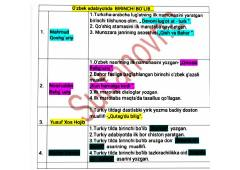

OAOʻzbek adabiyoti tarixidagi ilk asarlar va ularning mualliflari haqida maʼlumotnoma.
Ushbu kitob oʻzbek adabiyoti va tilshunosligi tarixidagi ilk asarlar, janrlar hamda ularning asoschilari haqida maʼlumot beradi. Unda turkiy tildagi dastlabki dostonlar, gʻazallar va oʻzbek romanchiligining shakllanish bosqichlari qisqacha bayon etilgan.